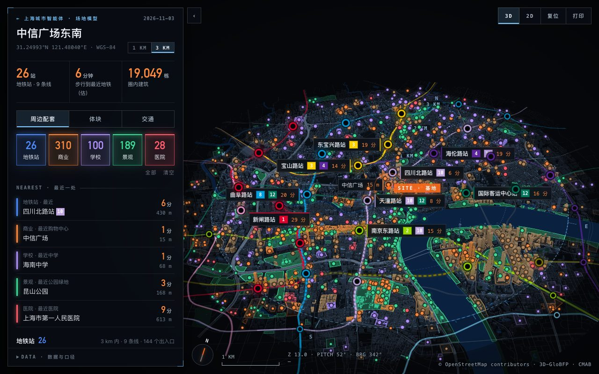

上海城市智能体
SHANGHAI CITY AGENT
CITY DATA MAP · 城市数据地图
we want to see what happened under the city
城市数据地图：以地点为单位，把 1 km / 3 km 圈内的建筑体块、周边配套、地铁与路网放进一张可以转动的三维地图。
PLACES · 地点

上海 · 虹口
中信广场东南
四川北路 × 塘沽路
19,049
栋建筑
26
座地铁站
627
处配套
1 KM / 3 KM · 数字为 3 km 圈 · 更新 2026-11-03
更多地点与城市，陆续加入